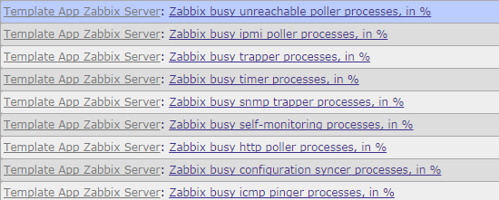
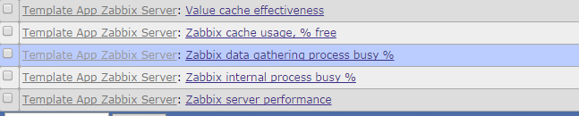

Zabbix是一款高性能的分布式监控报警系统。比如现在常见的家用台式机配置处理器I5-3470、内存4GB1600MHz、硬盘7200rpm就能够监控1000台左右的HOST，是的没错Zabbix就是可以达到这样的高性能。Zabbix运行时间长了会出现小小的瓶颈，小小瓶颈中最大的瓶颈是数据库。怎样解决瓶颈，提供一些可能的方法。
首先在zabbix-server上也装上zabbix-agent，并启用Template App Zabbix Server模板，监控zabbix-server服务内部的各项参数。启用模板后会新增加相应的监控项item、图形graph、触发器trigger。
类似这样的监控项会增加不少
{kind=link}
新增加的图形
{kind=link}
类似这样的触发器也会增加很多
然后当Zabbix Server出现性能瓶颈的时候就会发出报警，根据触发器的报警项，来更改zabbix-server的配置参数来适应当前工作环境环境。
下面分析可能出现的情景
1、关于 Zabbix data gathering process busy 问题（server收集数据时zabbix-server各个进程的性能监控）
监控项如下：
比如discoverer监控项报警：“Zabbix discoverer processes 75% busy”其实这时候查看这项的监控图或监控值可能达到了100%。
解决方法。编辑配置文件/usr/local/zabbix/etc/zabbix-server.conf，将StartDiscoverers参数增大，默认为1,将该参数增大到合适的数值，比如5.然后重启zabbix-server就好了，如果开启discoverer服务进程的利用率还继续飙高则继续增大discoverer启动进程数。
[root@Zabbix-Server ~]#vim /usr/local/zabbix/etc/zabbix-server.conf StartDiscoverers=5 [root@Zabbix-Server ~]#/etc/init.d/zabbix_server restart
比如 ipmi pinger监控项报警：“Zabbix icmp pinger processes more than 75% busy”，同样更改server的配置文件，增大参数StartPingers，由默认的1改为合适的数值，比如5。然后重启zabbix-server就好了。
[root@Zabbix-Server ~]#vim /usr/local/zabbix/etc/zabbix-server.conf StartPingers=5 [root@Zabbix-Server ~]#/etc/init.d/zabbix_server restart
这个进程负载监控图各个监控项对应配置文件的参数和默认值如下，当某个进程负载过高时调整相应的值：
Zabbix busy trapper processes, in % StartTrappers=5 Zabbix busy poller processes, in % StartPollers=5 Zabbix busy ipmi poller processes, in % StartIPMIPollers=0 Zabbix busy discoverer processes, in % StartDiscoverers=1 Zabbix busy icmp pinger processes, in % StartPingers=1 Zabbix busy http poller processes, in % StartHTTPPollers=1 Zabbix busy proxy poller processes, in % StartProxyPollers=1 Zabbix busy unreachable poller processes, in % StartPollersUnreachable=1 Zabbix busy java poller processes, in % StartJavaPollers=0 Zabbix busy snmp trapper processes, in % StartSNMPTrapper=0 Zabbix busy vmware collector processes, in % StartVMwareCollectors=0
2、关于 Zabbix cache usage 问题（server各种缓存数据空闲值的监控）
监控项如下：
这个缓存监控图各个监控项对应配置文件的参数和默认值如下，当某项buffer不够时增大容量到合适的值：
Zabbix-server: Zabbix trend write cache, % free TrendCacheSize=4M Zabbix-server: Zabbix configuration cache, % free CacheSize=8M Zabbix-server: Zabbix text write cache, % free HistoryTextCacheSize=16M Zabbix-server: Zabbix history write cache, % free HistoryCacheSize=8M Zabbix-server: Zabbix value cache, % free ValueCacheSize=8M Zabbix-server: Zabbix vmware cache, % free VMwareCacheSize=8M
3、监控项Item得设置合适的数据采样间隔interval，一般不要小于1分钟，对于长时间不变的量如内存总大小、磁盘总大小等应该尽量间隔时间大点比如一天(1d)或一周(1w)。
4、实在Host太多，还能怎样只能拆分架构，采用分布式架构减轻zabbix server 的压力，将这些压力分担到proxy上去。
5、历史数据是数据库爆满的主要原因。减少历史数据的保存时间，默认是90天，可以调成7天或更少，放心zabbix还保存着趋势数据，宏观上历史数据不会丢。
6、对history类型的(history、history_uint等)大表进行拆分操作，关闭housekeeper禁止自动定期清除历史记录数据，因为对于数据库特别是对于InnoDB引擎大数据删除貌似很蛋疼。
转载请注明出处：http://www.xiaomastack.com/2014/10/10/zabbix02/ 谢谢！